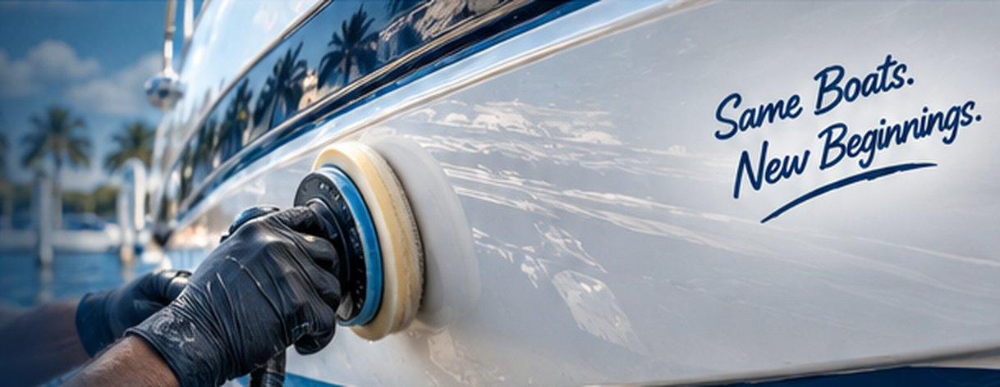
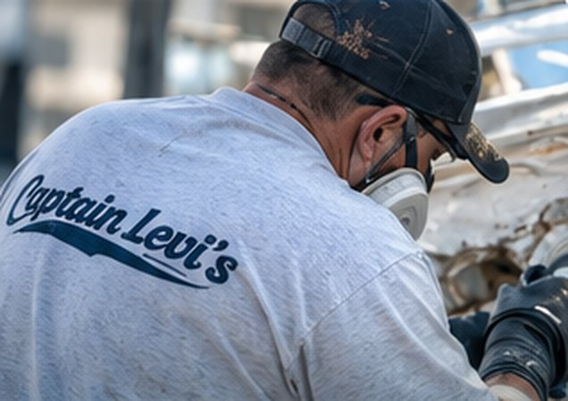

From light surface scratches to heavier scuffs, Captain Levi’s professionally removes imperfections and restores a smooth, like-new finish with expert gelcoat repair and color matching.
Surface scratches on your boat’s gelcoat are more than just cosmetic — over time, they can trap dirt, become visible from a distance, and lead to oxidation or deeper damage. Our professional scratch repair process removes scuffs and light scratches, blends the surface, and restores your boat’s shine with expert color matching.

We use proven marine repair techniques and high-quality materials to ensure a seamless, long-lasting finish.
We evaluate the scratches and determine the best repair method.
We wet sand and polish the area to remove the scratches and level the surface.
We match your gelcoat color and blend the repair for a seamless finish.
We finish with a high-gloss polish to restore shine and help prevent future oxidation.
See how we remove unsightly scratches and scuffs, restoring the original color, clarity, and shine to your boat’s gelcoat.
With over 50 years of fiberglass repair experience, we deliver high-quality results that keep your boat looking its best. From small scratches to major structural repairs, we’re the team boaters across Tampa Bay trust.
Scratches that stay within the gelcoat can usually be wet sanded and polished out completely. If a scratch has cut through to the fiberglass, we fill it with color-matched gelcoat first, then sand and polish it flush.
Yes. Any area that needs new gelcoat is tinted to your hull, then blended and polished so it disappears into the surrounding finish.
Light scratches that only need sanding and polishing are often done in a day. Scratches that need filling and color matching take longer to allow for cure time — we give you a timeline with the quote.
Usually, yes. Our mobile service handles most scratch and scuff repairs at your dock, lift or trailer, or you can bring the boat to our Largo boat yard.
It depends on how many scratches there are, how deep they go and whether they need color-matched gelcoat. Send us a few photos through the form below or call 727-391-7639 for a free quote.
Get a free quote or talk directly with Captain Dave about your boat.
Have surface scratches or scuffs you want looked at, need a quote, or ready to schedule? Fill out the form or give us a call — we’ll get back to you as soon as possible. Your boat deserves the best, and we’re here to make it happen.
Tell us a little about your project and we’ll get back to you quickly.